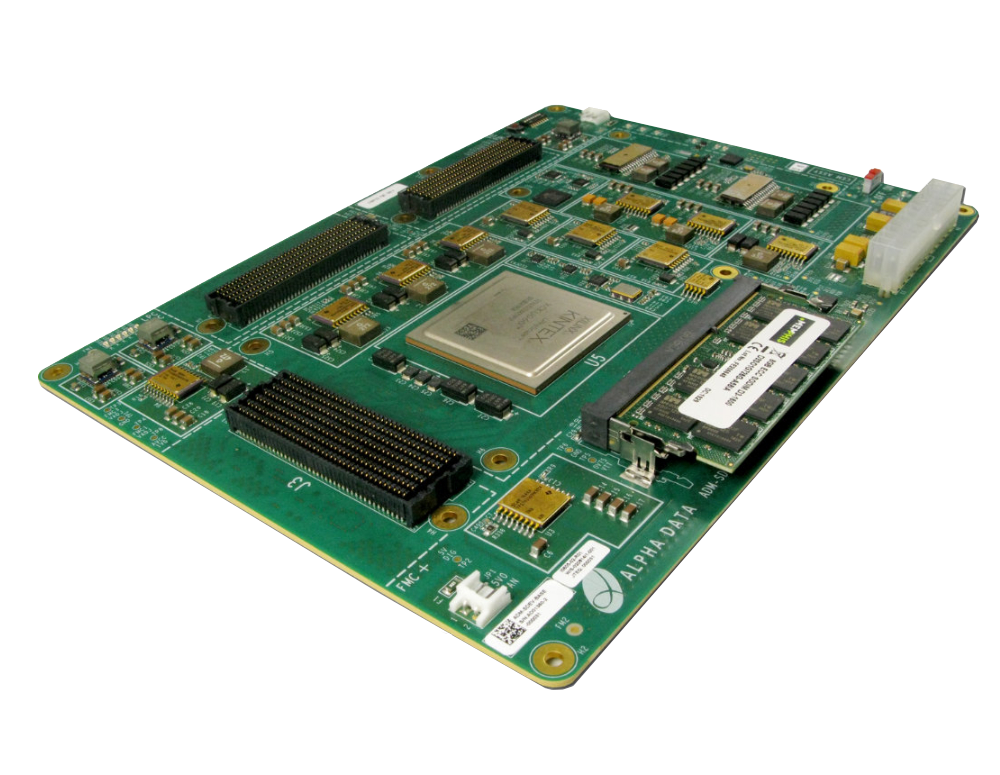
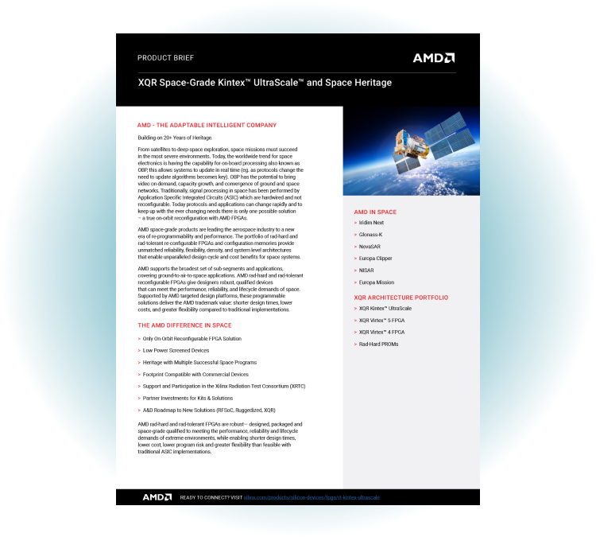

Advanced Micro Devices (AMD)
W kontekscie: Promieniowanie i elektronika rad-hard vs COTS
AMD to producent wysokowydajnych procesorów (CPU), akceleratorów graficznych i AI (GPU) oraz układów adaptacyjnych (FPGA i Adaptive SoC), które trafiły do portfela po przejęciu Xilinx w 2022 r. (🔵 AMD Q4 & FY2025 Earnings Release, 3 lutego 2026). Dla tematu radiacji najważniejsza jest właśnie spuścizna Xilinx: to ona daje AMD obecność w niszy odpornej na promieniowanie elektroniki kosmicznej, gdzie liczy się odporność na dawkę skumulowaną i zdarzenia pojedynczych cząstek - kwestie rozwijane w wątku Środowisko radiacyjne: czym właściwie grozi orbita.
W ofercie kosmicznej AMD (w segmencie Embedded, dawniej marka Xilinx) wyróżniają się trzy klasy układów. Pełny rad-hard reprezentuje Virtex-5QV (65 nm, odporność TID powyżej 1 Mrad(Si), LET ponad 100 MeV·cm²/mg) (🔵 AMD Space Solutions). Klasę rad-tolerant wyznacza Kintex UltraScale XQRKU060 (20 nm, 726 tys. komórek logicznych, 2 760 bloków DSP, 32 transceivery 12,5 Gbps, TID ok. 100 krad(Si)) (🔵 Kintex UltraScale XQR product page). Najnowszą warstwę stanowi Versal XQR (XQRVC1902 AI Core oraz XQRVE2302 AI Edge, 7 nm, z silnikami AI Engines, klasa B qualified), umożliwiający wnioskowanie AI bezpośrednio na orbicie (🔵 Versal Space-grade). To rozłożenie produktów dokładnie odwzorowuje napięcie kosztowo-wydajnościowe opisane w COTS kontra rad-hard: koszty, opóźnienie generacyjne, wydajność.
Przewaga AMD w tym podzespole opiera się na dziedzictwie lotnym Xilinx (obecność w aerospace & defense od 1989 r., pierwszy high-density rad-hard Virtex-5QV w 2010 r.) (🔵 AMD Space Solutions). Virtex-5QV ma ponad 15 lat flight heritage i jest obecny na setkach satelitów oraz statków kosmicznych (🟠 Dataintelo, czerwiec 2025) - to dorobek, który wpisuje się wprost w Heritage lotny: co już naprawdę poleciało. AMD/Xilinx jako pierwsze wprowadziło 20 nm space-grade FPGA (XQRKU060) oraz pierwszy 7 nm programowalny układ dla kosmosu (Versal XQR) z możliwością AI/ML on-orbit (🔵 AMD Space Solutions). Ekosystem narzędziowy Vivado i Vitis AI oraz kompatybilność prototypowa z odpowiednikami komercyjnymi (XCKU060) skracają drogę od projektu do wdrożenia (🔵 Kintex UltraScale XQR product page).
Dla inwestora: Pozycja AMD w niszy rad-hard wynika z heritage i wydajności obliczeniowej, a nie ze skali sprzedaży - to obrona przewagi technologicznej w wąskim, ale strategicznym fragmencie rynku.
Materiały spółki
Grafiki z materiałów spółki / IR (prawa właściciela, użycie redakcyjne). Pełny rejestr:
Spolki/assets/_licencje.json.

1. ADA-SDEV-KIT3 - zestaw deweloperski dla XQRKU060 (png). Źródło: www.amd.com; licencja: materiały spółki / IR - prawa właściciela, użycie redakcyjne.

2. Okładka solution brief „Space-Grade Kintex UltraScale XQR and Space Heritage” (png). Źródło: www.amd.com; licencja: materiały spółki / IR - prawa właściciela, użycie redakcyjne.
Pozycja rynkowa
Ekspozycja AMD na niszę rad-hard / rad-tolerant FPGA jest w skali całej spółki marginalna - i warto to zaznaczyć wprost. W FY2025 (rok zakończony 27 grudnia 2025) AMD osiągnęło przychód 34,6 mld USD (+34% r/r) i zysk operacyjny GAAP 3,7 mld USD (🔵 AMD Q4 & FY2025 Earnings Release, 3 lutego 2026). Strukturę napędza Data Center (16,6 mld USD, 48% przychodu, na bazie EPYC i akceleratorów Instinct) oraz Client & Gaming (14,6 mld USD, 42%). Cała elektronika kosmiczna mieści się w segmencie Embedded, który odpowiadał za 3,5 mld USD, czyli zaledwie 10% przychodu (🔵 AMD Q4 & FY2025 Earnings Release, 3 lutego 2026).
Sam udział produktów space-grade w przychodach jest NIE UJAWNIONE przez AMD - są agregowane wewnątrz segmentu Embedded. Dla skali odniesienia: cały rynek rad-hard FPGA szacuje się na 300-500 mln USD rocznie (🟠 Market Report Analytics, styczeń 2026), a szerszy rynek space-qualified FPGA (28 nm) na 1,8 mld USD w 2025 r. (🟠 Dataintelo, czerwiec 2025). Nawet przy udziale AMD rzędu dziesiątek procent w segmencie high-performance space FPGA, wkład tej niszy do skonsolidowanej sprzedaży pozostaje marginalny - poniżej 1%, prawdopodobnie ułamek procenta.
Pod względem pozycji rynkowej AMD/Xilinx jest wiodącym dostawcą wysokowydajnych, rekonfigurowalnych FPGA i SoC do zastosowań kosmicznych, szczególnie tam, gdzie potrzebna jest duża moc obliczeniowa on-board (obserwacja Ziemi, ładunki satcom, wnioskowanie AI na orbicie). Segment high-density space-grade FPGA jest faktycznie zdominowany przez dwóch producentów: AMD/Xilinx oraz Microchip/Microsemi (🟠 arxiv, 2024).
Konkurencja toczy się głównie na dwóch osiach. Microchip Technology (Microsemi) stawia na flash-based rad-hard RTG4 oraz RT PolarFire / PolarFire SoC i ma mocną pozycję w misjach GEO oraz deep-space i programach wojskowych (90+ misji, QML Class Q) (🟠 pmarketresearch.com, luty 2026). BAE Systems / Frontgrade konkuruje rad-hard procesorami (RAD750, RAD5545) oraz FPGA dla najwyższych kwalifikacji QML-V, głównie w programach NASA deep-space i obronie strategicznej (🔴 SemiconductorX). Oś podziału jest więc czytelna: AMD wygrywa wydajnością obliczeniową i nowoczesnym procesem (7-20 nm), rywale - najwyższymi klasami kwalifikacji i dziedzictwem w misjach krytycznych.
Ryzyka
Pierwsze i najważniejsze ryzyko dla niszy to presja COTS i rozwiązań rad-tolerant w New Space. Operatorzy dużych konstelacji LEO (Starlink, OneWeb, Planet Labs) coraz częściej akceptują komercyjne układy COTS z mitygacją (redundancja, ECC, scrubbing) zamiast drogich, w pełni rad-hard FPGA. Mechanizm jest dwustronny: segment rad-tolerant rośnie szybciej (szacowany CAGR ok. 11% wobec ok. 8,7% dla rad-hard), co przesuwa popyt ku tańszym wariantom, a jednocześnie presja cenowa może obniżać marże w całej niszy (🟠 Dataintelo, czerwiec 2025). Dla AMD oznacza to, że obroniona pozycja technologiczna nie gwarantuje obrony rentowności.
Drugie ryzyko to regulacje eksportowe, ITAR i geopolityka. Elektronika space-grade często podlega kontrolom strategicznym, a wrażliwość AMD na decyzje administracyjne jest namacalna: w FY2025 spółka odnotowała ok. 440 mln USD obciążeń związanych z amerykańskimi ograniczeniami eksportowymi wobec akceleratorów Instinct MI308 (🔵 AMD Q4 & FY2025 Earnings Release, 3 lutego 2026). Choć dotyczyło to akceleratorów AI, mechanizm jest identyczny dla aerospace & defense - administracyjna decyzja może z dnia na dzień zamknąć rynek lub zablokować dostawy w segmencie kosmicznym.
Dla inwestora: Oba ryzyka działają na marżę i dostępność rynku, nie na samą technologię - przewaga produktowa AMD może utrzymać się przy jednoczesnym uszczupleniu wartości tej niszy.
Powiązane spółki
Inne notowane spółki z raportu dzielące z tą firmą co najmniej jeden wątek tematyczny (wspólny rynek, technologia lub łańcuch wartości).
- BAE Systems plc (BA) - Rad-hard procesory (RAD750/RAD5545); optyka (Ball)
Wspólne wątki: Promieniowanie i elektronika. - Microchip Technology Incorporated (MCHP) - Rad-hard/rad-tolerant FPGA (RTG4) i mikrokontrolery
Wspólne wątki: Promieniowanie i elektronika. - NVIDIA Corporation (NVDA) - Akceleratory GPU (COTS) - ładunek obliczeniowy on-orbit
Wspólne wątki: Promieniowanie i elektronika.
Zrodla
- 🔵 AMD Q4 & FY2025 Earnings Release, 3 lutego 2026: https://ir.amd.com/news-events/press-releases/detail/1276/amd-reports-fourth-quarter-and-full-year-2025-financial-results
- 🔵 AMD Space Solutions: https://www.amd.com/en/solutions/aerospace-and-defense/space.html
- 🔵 Kintex UltraScale XQR product page: https://www.amd.com/en/products/adaptive-socs-and-fpgas/fpga/kintex-ultrascale-xqr.html
- 🔵 Versal Space-grade: https://www.amd.com/en/products/adaptive-socs-and-fpgas/versal/space-grade.html
- 🟠 Market Report Analytics, styczeń 2026 (rynek rad-hard FPGA): https://www.marketreportanalytics.com/reports/radiation-hardened-fpga-384971
- 🟠 Dataintelo, czerwiec 2025 (space-qualified FPGA 28 nm): https://dataintelo.com/report/space-qualified-fpga-28-nm-market
- 🟠 arxiv, 2024 (dominacja dwóch producentów high-density space FPGA): https://arxiv.org/html/2409.12253v1
- 🟠 pmarketresearch.com, luty 2026 (FPGA for space market): https://pmarketresearch.com/it/fpga-for-space-market/
- 🔴 SemiconductorX (sektor space/military): https://semiconductorx.com/sector-space-military.html
Linkują tutaj
5 powiązanych notatek
- Mapa raportu Orbitalne / kosmiczne centra danych
- Sekcja Promieniowanie i elektronika rad-hard vs COTS
- Spółka BAE Systems (BA)
- Spółka Microchip Technology (MCHP)
- Spółka NVIDIA (NVDA)